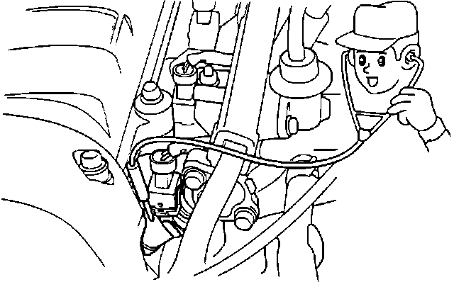
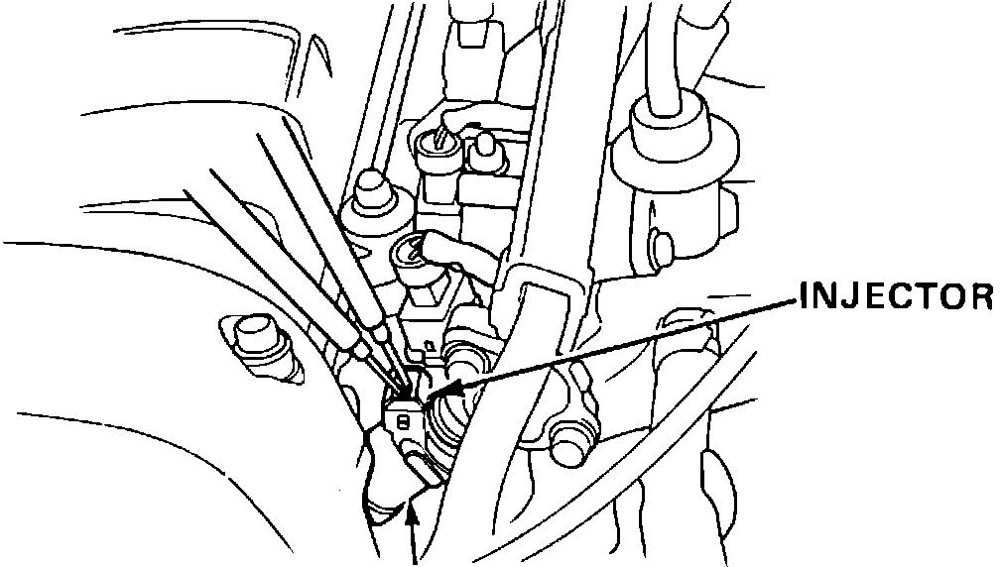
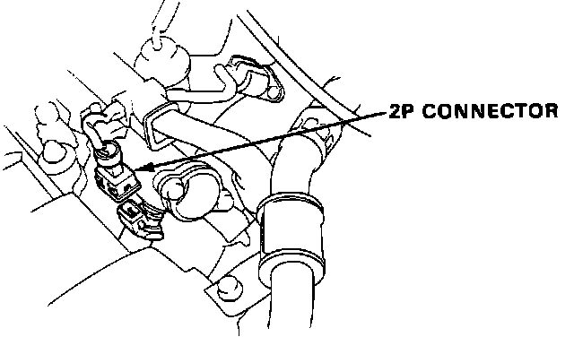
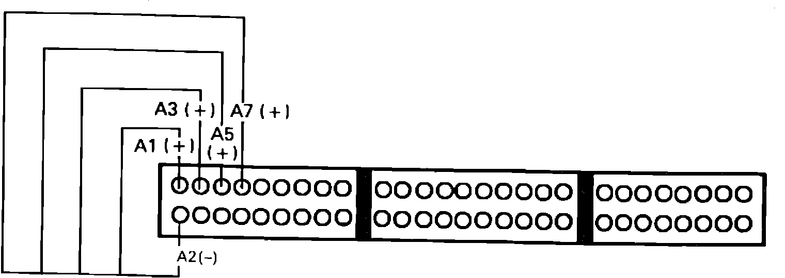

Fuel Injector: Testing and Inspection
Code 16 indicates a malfunction in the fuel injector circuit.1. Remove HAZARD fuse in underhood main fuse box for 10 seconds to reset ECU.
2. Start engine. if engine does not start proceed to step 6.
3. Observe diagnostic LED.
Flashes code 16, proceed to step 5.
Does not flash, proceed to next step.
4. Malfunction is intermittent. Check connections at injector resistor, ECU, injectors and round 14 pin harness connector at left strut tower. End of test.
Fuel Injector Testing:

5. Using a stethoscope, listen to each injector while engine idles.
All click, replace electronic control unit.
Not all click, proceed to next step.
Fuel Injector Testing:

6. With ignition off measure resistance across the inactive injector, (all injectors if engine will not start).
1.5 - 2.5 ohms, proceed to next step.
Not 1.5 - 2.5 ohms, replace injector(s).
7. Turn ignition on.
Fuel Injector Connector:

8. Measure voltage, at each injector individually, between RED/BLK terminal and ground.
Battery voltage on all, proceed to step 13.
Not battery voltage on all, proceed to next step.
9. Turn ignition off and disconnect 6 wire connector from injector resistor.
10. Measure voltage between YEL/BLK harness terminal and ground with ignition on.
Battery voltage, proceed to step 12.
No battery voltage, proceed to next step.
11. Repair open YEL/BLK wire between injector resistor and main relay. End of test.
12. Check for open REB/BLK wire(s) between injector resistor and injector(s). If wires check OK, replace injector resistor. End of test.
13. Turn ignition off and reconnect injector connectors.
Fuel Injector Testing:

14. Install test harness between ECU and harness connector. If test harness is not available, carefully backprobe wires at ECU connector.
15. Turn ignition and measure voltage between terminal A2 and the following terminals:
A1
A3
A5
A7
Battery voltage all terminals, replace electronic control unit. End of test.
No battery voltage all terminals, proceed to next step.
16. Repair open wire between injector and ECU terminal failing to provide battery voltage.